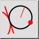

Werkzeugleiste / Symbol:  Menü: Zeichnen > Kreis > Tangente, Punkt, Radius Tastenkürzel: C, T, P Kommandos: circletangentpointradius | ctp
Zeichnet einen Bogen mit gegebenem Radius, tangential zu einem Objekt und durch einen Punkt.